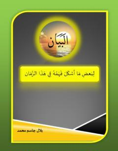
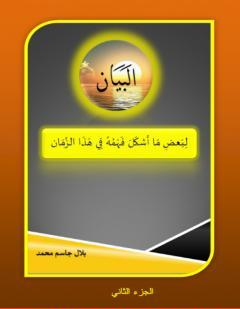
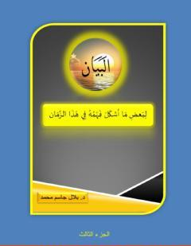
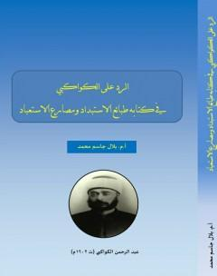
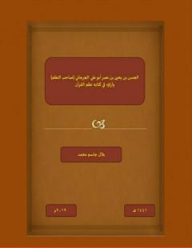
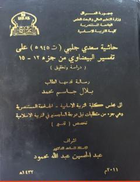

البيان لما أشكل فهمه في هذا الزمان
الجزء الأول
بسم الله الرحمن الرحيم
موقع أكاديمي يضم السيرة العلمية، والمؤلفات، والبحوث والدراسات في علوم القرآن والتفسير والدراسات الإسلامية.
الدكتور بلال جاسم محمد الخزرجي، من مواليد عام 1977م، حاصل على شهادة البكالوريوس في قسم التربية الإسلامية، كلية التربية الأساسية، جامعة ديالى عام 1999م، وحاصل على شهادة الماجستير في قسم التربية الإسلامية، كلية التربية الأساسية، الجامعة المستنصرية عام 2012م.
حصل على شهادة الدكتوراه في قسم علوم القرآن، كلية التربية ابن رشد، جامعة بغداد عام 2024م.
يعمل حاليًا مدرسًا أقدم على ملاك المديرية العامة لتربية ديالى في العراق، وله عدد من المؤلفات والبحوث في علوم القرآن والتفسير والدراسات الإسلامية.
علوم القرآن – جامعة بغداد
2024مالتربية الإسلامية – الجامعة المستنصرية
2012ممدرس أقدم – تربية ديالى
مجموعة من الكتب والرسائل العلمية للدكتور بلال جاسم

الجزء الأول

الجزء الثاني

الجزء الثالث

قراءة لكتاب طبائع الاستبداد ومصارع الاستعباد من منظور الإسلام

دراسة في بيان المفاهيم والأسس

دراسة وتحقيق من الجزء الثاني عشر إلى الخامس عشر
دراسة في بيان المفاهيم والأسس – أطروحة دكتوراه
دراسة وتحقيق – رسالة ماجستير
ثلاثة أجزاء
قراءة لكتاب طبائع الاستبداد من منظور الإسلام
وآراؤه في كتابه نظم القرآن